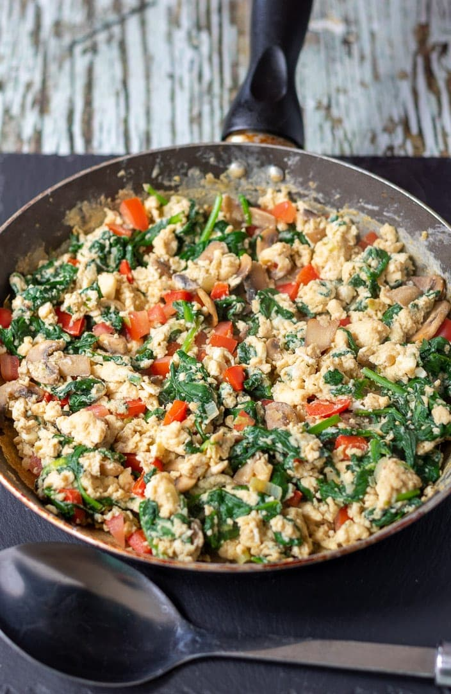

Scrambled Eggs with Veggies

Recipe for scrambled eggs. Feel free to get creative with ingredients. We like to
add tons and tons a different vegtables as they all seem to blend together well
and are super healthy! Meat can be a nice add as well to make it a little more
hardy.
- 6 eggs
- 2 teaspoons of oil
- Freshly Ground Salt and Pepper
- Handful of Brussels Sprouts
- Small Bundle of Kale or Spinach
- 3 Small Potatoes
- 1 Large Onion
- Half of dozen Aspargus
- Pour oil in pan of your choosing and start to preheat under medium to medium
loe heat
- Start with harder vegtables first i.e. potatoes, and brussels sprouts. Chop
them to small bit size pieces. Ideally all uniform size. Once chopped add to
preheated pan.
- Chop up rest of veggies and slowly add to pan as harder veggies cook. Be sure
to stir regularly. Add salt and pepper while stirring.
- Once veggies are almost cooked start to prep the eggs but cracking them into
a small bowl. Lightly beat the eggs and add seasonings of your choice.
- In the same pan as the veggies make room to pour the eggs on a bare pan. Do not
stir the eggs to much and this can make them runny. Once the eggs are almost
cooked stir the eggs and veggies together. Be sure to remove the heat a little
before the eggs are done as they will continue to cook.